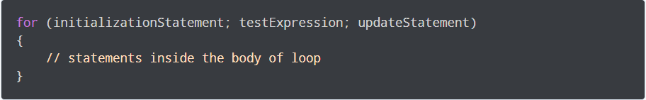

C is a procedural programming language. It was initially developed by
Dennis Ritchie in the year 1972. It was mainly developed as a system
programming language to write an operating system. The main features
of the C language include low-level memory access, a simple set of keywords,
and a clean style, these features make C language suitable for system
programmings like an operating system or compiler development.
Many later languages have borrowed syntax/features directly or indirectly
from the C language. Like syntax of Java, PHP, JavaScript and many other
languages are mainly based on the C language. C++ is nearly a superset of
C language.
Data Type
In C programming, data types are declarations for variables. This determines the type and size of data associated with variables.
Here's a table containing commonly used types in c programming for quick access.
| Type | Size(bytes) | Format Specifier |
|---|---|---|
| int | at least 2, usually 4 | %d, %i |
| char | 1 | %c |
| float | 4 | %f |
| double | 8 | %lf |
| long double | 16 | %Lf |
Variable Declaration:
Condition Operator
Conditonal statements in C programming are used to make decisions based on the conditions. Conditional statements execute sequentially when there is no condition around the statements. If you put some condition for a block of statements, the execution flow may change based on the result evaluated by the condition.
In C programming conditional statements are possible with the help of the
following two construct:
1. if statement.
2. if-else if satement.
Loop
In programming, a loop is used to repeat a block of code
until the specified condition is met.
C programming has
three types of loops:
1. for loop

2. while loop

3. do...while loop
Function
A function is a group of statements that together perform a task. Every C program has at least one function, which is main(), and all the most trivial programs can define additional functions. You can divide up your code into separate functions. How you divide up your code among different functions is up to you, but logically the division is such that each function performs a specific task. A function declaration tells the compiler about a function's name, return type, and parameters. A function definition provides the actual body of the function. The C standard library provides numerous built-in functions that your program can call. For example, strcat() to concatenate two strings, memcpy() to copy one memory location to another location, and many more functions.